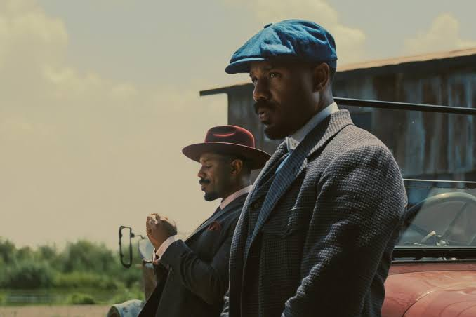
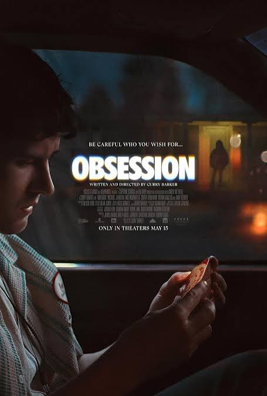

Project Hail Mary
Project Hail Mary by Andy Weir follows Ryland Grace, a scientist who wakes up alone on a spaceship with no memory of who he is or why he is there. As his memories slowly return, he discovers that Earth is facing an extinction-level threat caused by a mysterious organism that is draining energy from the Sun. Grace realizes he has been sent on a desperate mission to find a solution and save humanity. During his journey, he encounters an alien named Rocky, who is facing the same threat on his own planet. Despite their differences, the two form an unlikely friendship and work together to understand the organism and find a way to save both of their worlds. The story combines science, humor, suspense, and friendship while exploring how cooperation and sacrifice can overcome seemingly impossible challenges.
Grace's scientific work drives much of the story. He tests ideas, learns from setbacks, and uses evidence to understand the threat. Rocky brings knowledge and skills from another world. At first, communication between them is difficult because they do not share a language. As they find ways to understand each other, their trust grows. Their friendship becomes as important as their discoveries.

Sinners
Sinners, directed by Ryan Coogler, follows twin brothers Smoke and Stack as they return to their hometown in Mississippi in 1932 to start a new life by opening a juke joint. As they gather musicians, family, and friends for the club's opening night, they soon discover that something far more dangerous has arrived in town. A group of mysterious vampires begins targeting the people inside, turning the night into a fight for survival. As the characters struggle against the supernatural threat, the story explores themes of family, racism, music, cultural identity, and the power of community. Ultimately, Sinners combines horror with historical drama to show how music can connect people to their heritage and give them strength in the face of evil.
Music connects the characters to their culture and history. The juke joint brings musicians, friends, and family together before danger arrives. Smoke and Stack hope to make a fresh start, but their past and choices shape what happens next. The film combines supernatural horror with its Mississippi setting. That contrast builds tension between the excitement of opening night and the threat that interrupts it. Its focus on family, music, and community gives the horror a human story at its center.

Obsession
Obsession by Curry Barker is a psychological horror story that explores how an unhealthy fixation can quickly take over a person's life. The story follows a character whose growing obsession begins to blur the line between what is real and what is imagined. As the fixation becomes stronger, the character's thoughts and actions become increasingly disturbing, creating a sense of paranoia and dread. Barker builds suspense by showing how something that may initially seem harmless can become dangerous when it is allowed to consume someone completely. The story ultimately explores themes of obsession, fear, control, and the consequences of losing touch with reality.
Psychological horror often relies on uncertainty, and this story uses it to keep the audience alert. As the fixation grows, ordinary interactions can take on a more threatening meaning. The character's changing perspective makes it harder to tell where concern ends and danger begins. This gradual escalation creates suspense without revealing every detail at once. The themes invite reflection on boundaries, control, and personal responsibility. By focusing on obsession's effects, the story turns an internal struggle into a source of tension.
